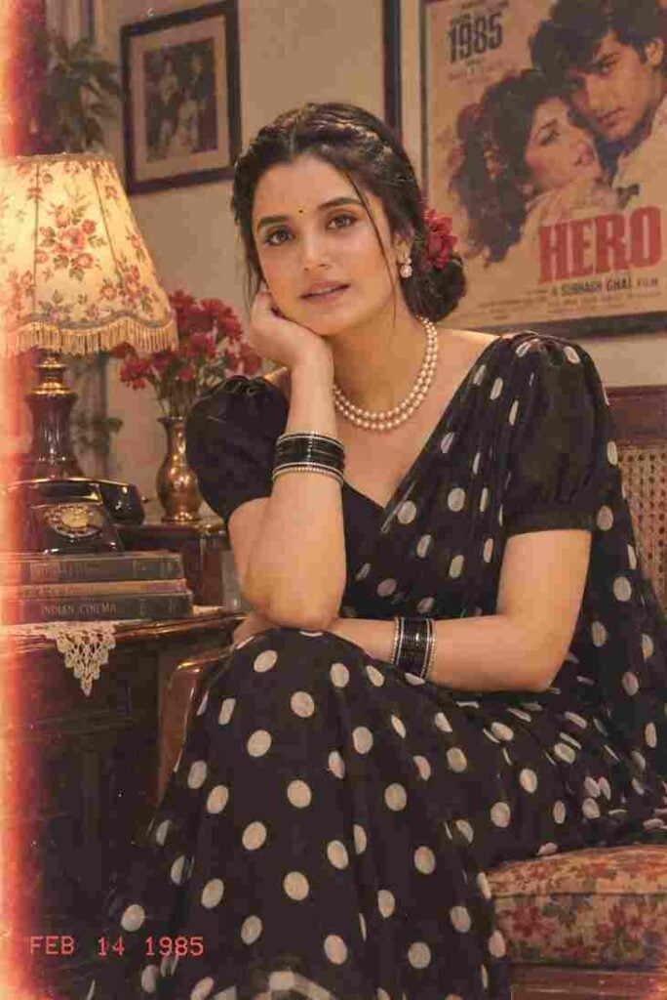
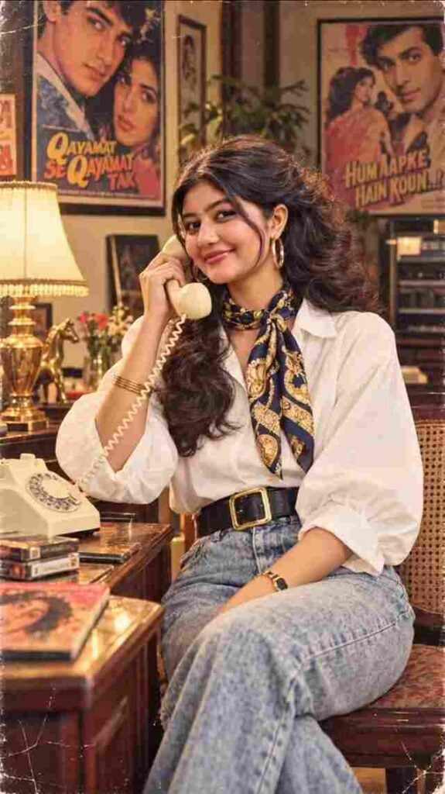
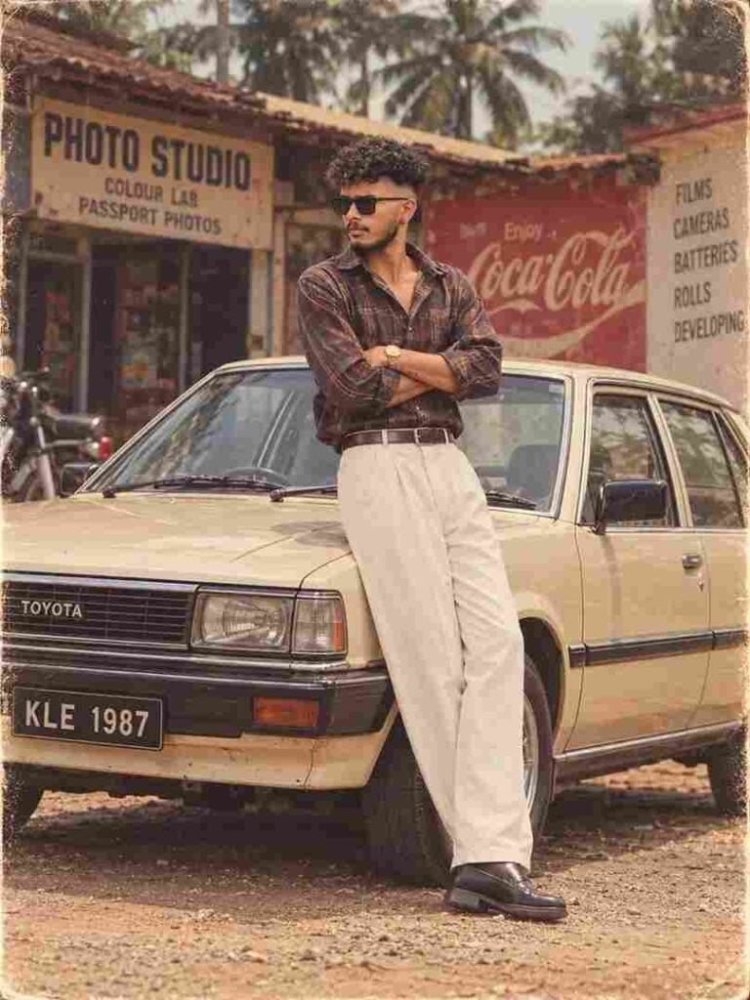
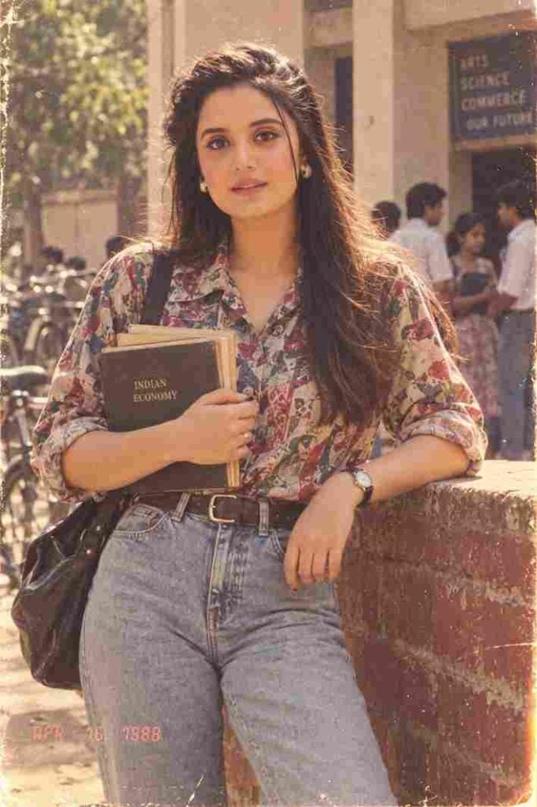
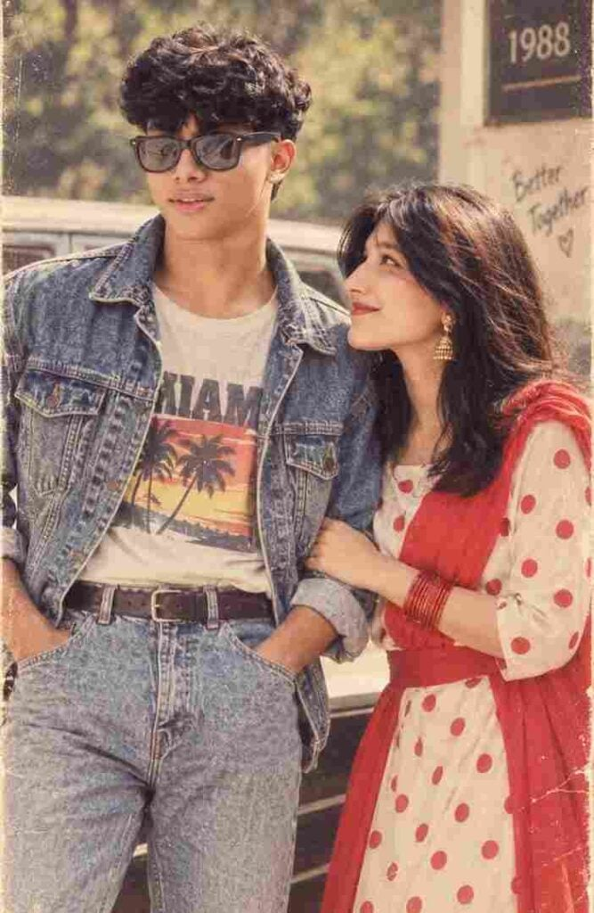
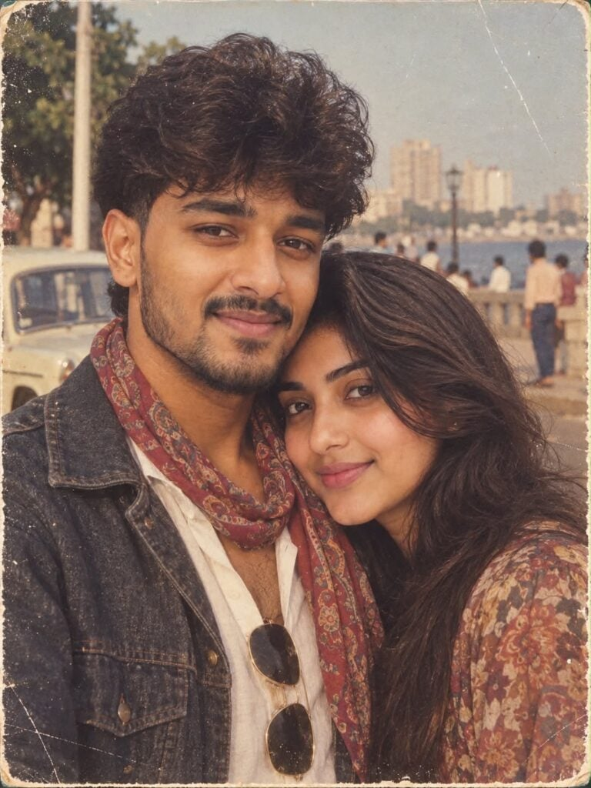
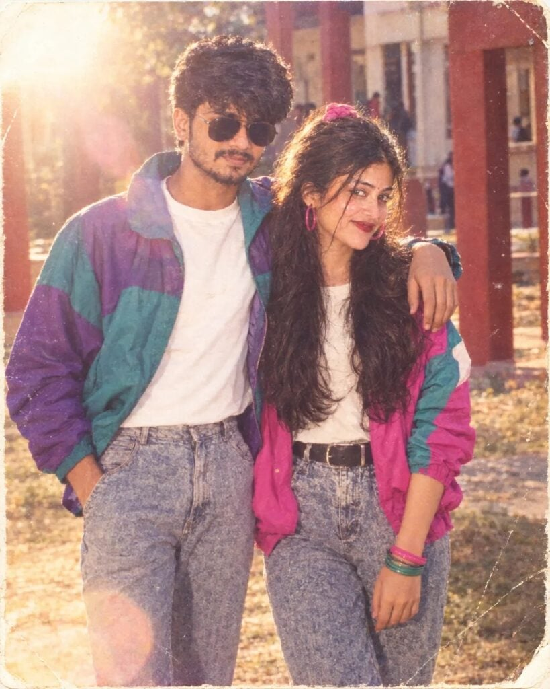
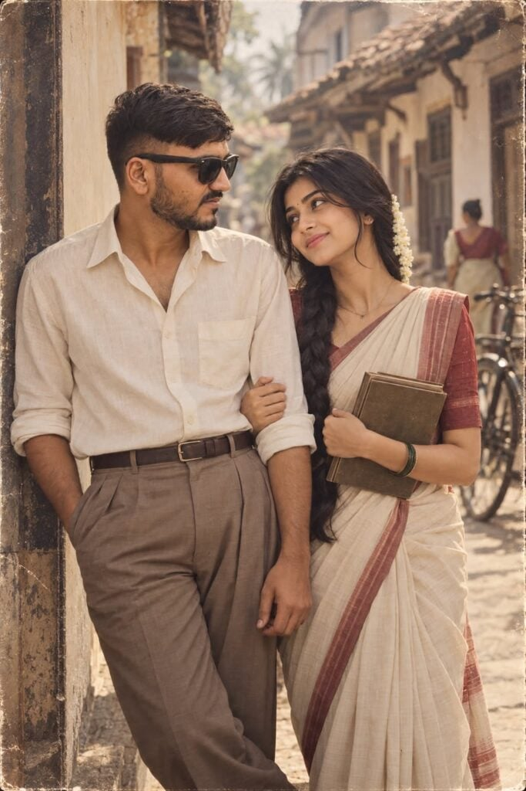

Looking for a 1980s AI photo prompt to turn your own picture into a realistic retro portrait? This page has 12+ free 1980s AI photo prompts for boys, girls, and couples — vintage saree looks, denim and bike shoots, Bollywood-inspired portraits, and Indian college scenes from the 80s. Every 1980s AI photo prompt here is written to keep your real face while changing the clothing, hairstyle, colors, background, and photography style to match the era.
You don’t need any professional editing skills. Just copy a prompt, upload a clear photo of yourself to ChatGPT, Gemini, or any AI image editor that supports reference images, and you’ll have a nostalgic 80s look photo in a few moments. Scroll down to find the retro style that suits you best.
What Is the 1980s Look AI Photo Trend?
The 1980s Look AI Photo Trend is an AI photo editing trend that transforms a normal modern photograph into a picture inspired by the fashion and photography of the 1980s. The AI can add vintage clothing, classic hairstyles, retro accessories, old-camera effects, faded colors, film grain, and an authentic background while keeping the person recognizable. You can create an Indian 1980s college look, vintage family photo, Bollywood-inspired portrait, street-style photograph, or classic studio picture depending on the prompt you use.
Best 1980s Look AI Photo Editing Prompt
If you want to create a realistic 1980s photo using your own picture, upload your photo to an AI image editor and paste the prompt below. This prompt focuses on maintaining your identity while changing the overall appearance, clothing, environment, and photographic style to match the late 1980s.
Want more awesome prompts?
Join our community and get the latest viral prompts daily.
Create a photorealistic vintage 1950s–60s-inspired cinematic portrait of the woman from the uploaded reference image. Preserve her exact facial identity, facial structure, natural skin tone, hairstyle characteristics, and realistic facial details.
IMPORTANT: Keep the woman’s FACE DIRECTION, HEAD ANGLE, EYE DIRECTION, and GAZE EXACTLY AS SHOWN IN THE UPLOADED REFERENCE IMAGE. She is looking FRONT/TOWARD THE CAMERA, so do not turn her face to the side or change her eye direction. Her face must remain naturally front-facing toward the camera, with the same overall facial orientation as the reference. Do not alter the gaze direction.
Dress her in a beautiful vintage red dress with white polka dots, a fitted square-neck bodice, short puff sleeves, and a flowing full skirt. Style her dark hair in a high ponytail with a red-and-white polka-dot bow, with a few soft strands naturally framing her face. Add large white hoop earrings, a delicate silver necklace with a small pendant, and a classic black wristwatch.
Place her sitting gracefully at an outdoor retro café, with one hand gently supporting her cheek/chin and the other arm resting naturally across her lap. Her legs are elegantly crossed, and she wears elegant white ankle-strap heels.
Create a nostalgic 1950s–60s American diner atmosphere around her: a vintage red classic car parked behind her, an old-fashioned café storefront, striped awning, warm glowing lights, retro signage, and softly blurred street details. In the foreground, place a small distressed vintage café table with a classic vintage camera, folded newspapers, a glass Coca-Cola bottle, and a small vase of flowers.
Use warm golden-hour sunlight, cinematic lighting, realistic shadows, shallow depth of field, subtle background bokeh, authentic vintage film grain, slightly faded retro color grading, natural skin texture, realistic hair strands, detailed fabric texture, and professional editorial photography.
The final image should look like an authentic vintage photograph captured with a high-end camera, while maintaining the woman’s exact recognizable facial appearance and, most importantly, the EXACT FRONT-FACING FACE AND EYE DIRECTION from the uploaded reference image.
Photorealistic, ultra-detailed, natural proportions, cinematic composition, nostalgic 1950s–60s aesthetic, vertical 9:16 portrait, no face distortion, no change in gaze direction, no side profile.

? AI PROMPT
vintage 1980s retro portrait of a young South Asian woman sitting gracefully indoors, leaning her chin on her hand with a subtle smile. She is wearing a classic black saree with bold white polka dots and a matching blouse featuring short puff sleeves. Her dark hair is styled in a neat, low textured bun decorated with a vibrant red flower. She wears a double-strand pearl necklace, small traditional dangling earrings, black and silver bangles on both wrists, a small nose ring, and a tiny bindi on her forehead. The setting is an aesthetic 1980s room with warm, soft interior lighting. In the background, there is a vintage vintage-style floral lampshade on a wooden side table, a stack of old books, a vintage black rotary dial telephone, a vase with red flowers, and a framed retro Bollywood movie poster on the wall with the year "1985" visible. Shot on 35mm film stock, grainy vintage film texture, subtle light leaks, faded color palette with warm tones, soft focus background, authentic 1980s Indian retro photography style. In the bottom left corner, a faint red analog camera timestamp reads "FEB 14 1985".

? AI PROMPT
Ultra-realistic cinematic 1990s Bollywood-inspired retro portrait of a young Indian woman sitting comfortably beside a vintage wooden table in a cozy old-fashioned room. She is holding a cream-colored vintage rotary landline telephone receiver to her ear with one hand and smiling softly toward the camera. She has long, naturally wavy dark brown hair styled in a voluminous half-up hairstyle with loose curls cascading over one shoulder, subtle strands framing her face, delicate gold hoop earrings, stacked thin gold bangles, and a navy-blue silk neck scarf with an ornate gold paisley pattern tied loosely around her neck. She wears a crisp oversized white button-up shirt with rolled-up sleeves, high-waisted light-blue vintage relaxed-fit jeans, and a wide black leather belt with a large gold rectangular buckle.
The room has a warm nostalgic 1980s–1990s Indian atmosphere, with wooden furniture, a classic table lamp with a cream pleated shade, vintage books and magazines on the table, an old telephone base, decorative plants, framed artwork, and classic Bollywood movie posters visible on the wall in the background. Warm tungsten lighting, soft golden highlights, subtle film grain, authentic vintage color grading, shallow depth of field, realistic skin texture, natural facial features, cinematic composition, candid editorial photography, highly detailed hair and fabric textures, 35mm film photography aesthetic, soft shadows, atmospheric depth, photorealistic, premium fashion editorial look.
Composition: vertical 9:16 portrait, seated three-quarter pose, medium-full body framing, camera at eye level, subject sharply in focus, background naturally blurred but recognizable, elegant relaxed expression, realistic proportions, cinematic depth of field, no text overlays, no watermark.
? AI PROMPT
Ultra HD 8K photorealistic retro 80s couple front pose looking directly at camera smiling -- woman front facing beautiful smile teeth visible red lipstick black cat-eye sunglasses off-white midi dress red small floral print puff short sleeves square neck red leather belt waist red bandana headscarf on hair bun white sneakers left hand on white vintage car right hand holding man's hand legs crossed -- man front facing curly mullet hair mustache black sunglasses. 4:6
? AI PROMPT
Using my uploaded photo, show me what I would have looked like around 1985. Preserve my identity, facial features, skin tone, age, and recognizable appearance. Reimagine my hair, clothing, accessories, and surroundings with bold, unmistakably mid-1980s styling—expressive silhouettes, statement accessories, layered details, distinctive colors, and textures. Make it feel like a genuine 1985 photograph with analog grain, faded color, direct flash, and subtle softness.
? AI PROMPT
Transform my uploaded photo to recreate the same composition, pose, setting, clothing style, lighting and vintage aesthetic as the reference image. Keep the exact same person/people from my uploaded photo and preserve their facial identity and features. Do not replace or alter their faces. Use the reference only for the scene, styling and photographic look. Create an authentic late-1980s Indian photograph with period hairstyles, fashion, Royal Enfield Bullet, natural greenery, warm sunlight, analog film grain, faded colors and realistic vintage photography. Reference = style/composition; uploaded photo = identity"
Note:-
For an exact result like the photo I shared, take a screenshot of that photo and keep it as the reference image. Then upload the reference image along with your own photo and use the prompt. This will help the Al recreate the same
composition nose setting, styling and vinta Go to source ping your face/identry om your uploaded
photo.

? AI PROMPT
Transform my uploaded photo to recreate the same composition, pose, setting, clothing style, lighting and vintage aesthetic as the reference image. Keep the exact same person/people from my uploaded photo and preserve their facial identity and features. Do not replace or alter their faces. Use the reference only for the scene, styling and photographic look. Create an authentic late-1980s Indian photograph with period hairstyles, fashion, Royal Enfield Bullet, natural greenery, warm sunlight, analog film grain, faded colors and realistic vintage photography. Reference = style/composition; uploaded photo = identity"
Note:-
For an exact result like the photo I shared, take a screenshot of that photo and keep it as the reference image. Then upload the reference image along with your own photo and use the prompt. This will help the Al recreate the same
composition nose setting, styling and vinta Go to source ping your face/identry om your uploaded
photo.

? AI PROMPT
Use the uploaded photo and recreate the same person as if photographed in India in the late 1980s. Preserve the face, skin tone, body shape, smile and overall identity very accurately. Style them in a fashionable 80s outfit like high-waisted jeans, printed shirt/denim jacket, retro accessories and voluminous hair. Use a realistic Indian college/home/street background with warm faded film colors, grain, soft focus and a vintage 1988 photo feel

? AI PROMPT
Transform my uploaded photo into an authentic 1980s retro look. Keep my exact face, facial features, skin tone, expression, body shape, and identity completely unchanged. Do not alter, replace, beautify, or distort my face. Add realistic 1980s hairstyle, vintage fashion, classic accessories, warm analog lighting, faded colors, subtle film grain, soft focus, natural shadows, and an authentic old-camera aesthetic. Make the image look like a genuine photograph taken in the 1980s, while preserving my original appearance accurately.

? AI PROMPT
Prompt: Transform my appearance into an authentic 1980s version of myself while keeping my facial features and identity recognizable. Give me an iconic 80s scarf, vintage clothing, retro accessories, and an authentic 1980s atmosphere. Make it look like a real photograph taken in the 1980s, with vintage film grain, natural lighting, realistic skin texture, and period-accurate colors Do not change my face or make me look like a different person.

? AI PROMPT
Using the two uploaded photos as exact face references — image 1 for the man, image 2 for the woman. Preserve both faces exactly: bone structure, jawline, nose shape, eye shape, brow shape, lip shape, skin tone must match the references precisely. Do not stylize, slim, lighten, or beautify either face. Generate a 1991 Indian couple portrait. Setting: an outdoor college campus in winter afternoon light — red-pillared corridor and pale buildings blurred behind, dry grass, warm sun.He wears a teal-and-purple colour-blocked nylon windbreaker over a white tee, high-waisted stonewashed jeans, white sneakers, moustache, thick wavy hair. She wears a magenta-and-teal colour-blocked windbreaker over a white top, high-waisted acid-wash jeans with a wide black belt, chunky pink and green bangles, large pink hoop earrings, a pink scrunchie holding back long voluminous curls. They stand side by side, close, his arm around her shoulder.Both heads turned squarely toward the camera, gaze directed straight into the lens, pupils centered, bright open smiles. Lighting: warm low winter sun from behind camera-left, strong rim light on hair, heavy flare. Style: authentic early-1990s amateur snapshot on expired 35mm film, cheap point-and-shoot with a plastic lens.
Soft overall focus, low micro-contrast, oversaturated magenta-leaning colour, blown highlights, faded milky blacks, heavy grain, halation bloom, chromatic aberration, corner falloff and vignetting. Aged physical print — colour shift, dust specks, scratches, worn white photo border with corner creases. Framed from mid-thigh up so both faces occupy a large portion of the frame. 4:5 vertical.
Negative: sharp, crisp, high detail, 4k, 8k, HDR, digital photography, clean, oversharpened, perfect focus, DSLR, smooth skin, retouched, looking away, side profile, closed eyes, glancing at each other, mismatched gaze, different face, face swap artifacts, distorted hands, extra fingers, modern clothing.

? AI PROMPT
Create an ultra-realistic cinematic romantic photograph of a young South Indian couple in the 1950s, using the uploaded reference images as the PRIMARY facial identity references. 🔒 STRICT IDENTITY LOCK: Preserve both people's exact facial identities from the uploaded reference images. Keep their face shape, forehead, eyebrows, eyes, nose, lips, jawline, ears, skin tone, facial proportions, hairstyle characteristics, and overall recognizable appearance unchanged. Do not beautify, reshape, or replace their faces. ❤️ COUPLE & EMOTION: Show the couple as deeply-in-love young lovers from the 1950s. They stand close together with a natural, innocent romantic connection. The man looks lovingly at the woman while she gives him a subtle, shy smile. Their body language should feel genuine, intimate, elegant, and emotionally heartfelt—not exaggerated. 👩 WOMAN — 1950s STYLE: Dress her in an authentic 1950s South Indian traditional saree with a classic vintage blouse, neatly styled long hair with a traditional braid or soft vintage hairstyle, small bindi, simple earrings, traditional bangles, and minimal period-accurate jewelry. Keep the styling graceful and modest. 👨 MAN — 1950s STYLE: Dress him in authentic 1950s South Indian fashion: neatly tucked-in light-colored vintage shirt, high-waisted trousers or traditional veshti, classic leather sandals or vintage shoes, and neatly groomed period-appropriate hair. Keep the outfit historically believable. 🌿 LOCATION: Set the scene on an old South Indian street in the 1950s, featuring vintage houses, wooden doors, old bicycles, subtle period details, and a quiet romantic atmosphere. No modern buildings, vehicles, phones, signs, or contemporary objects. 🎞️ VISUAL STYLE: Authentic 1950s Indian cinema aesthetic, timeless romance, realistic vintage film photography, subtle analog film grain, slightly faded tones, soft natural light, gentle shadows, realistic skin texture, authentic fabric texture, cinematic depth, atmospheric background, nostalgic storytelling. 📷 CAMERA: Professional vintage 50mm film-camera look, medium shot, eye-level composition, shallow depth of field, natural perspective, soft background separation, realistic photographic detail. 🎬 FINAL LOOK: Make the image look like a genuine romantic still photograph captured in the 1950s—not a modern photograph with a vintage filter. Photorealistic, historically believable, emotionally warm, elegant, nostalgic, premium cinematic quality, highly detailed. No text, no watermark, no logo, no modern objects, no artificial-looking faces, no plastic skin, no exaggerated expressions.
Creating a 1980s retro photo with ChatGPT is very simple. Open ChatGPT and upload the photograph you want to transform, preferably using a clear image where your face is easily visible. After uploading the photo, copy one of the 1980s AI prompts from this article and paste it into the chat. The AI will use your uploaded image as a reference and create a new version based on the instructions in your prompt. You can also ask for a specific style such as an Indian college look, vintage family photograph, Bollywood-inspired look, 1980s street photo, or classic studio portrait.
How to Keep Your Face Unchanged
If keeping your original face is important, clearly mention it in the prompt. Words such as “preserve my original face,” “keep my facial features unchanged,” “maintain my identity,” and “do not reshape or distort my face” help communicate that the transformation should focus on the era, clothing, background, and photography rather than replacing your identity. However, AI image editing can still introduce small changes, so using a clear and high-quality source photo generally gives better results.
How to Make the Photo Look More Realistic
The secret to a convincing 1980s photo is not only the clothing but also the photography. Instead of asking for a simple “vintage effect,” describe realistic analog characteristics such as 35mm film grain, faded colors, soft focus, natural shadows, mild exposure imperfections, realistic skin texture, slight lens softness, and old-camera photography. These details can help the generated image feel more like an authentic photograph from the decade instead of a modern picture with a simple vintage filter.
Common Mistakes to Avoid
Using a blurry or low-resolution photo: the AI copies facial detail from your reference image, so a poor-quality input almost always produces a distorted face.
Asking only for a “vintage filter”: a filter changes colors but not clothing, hairstyle, or background. Describe the era’s fashion and photography style instead.
Forgetting to lock the face direction: if your reference photo is front-facing, say so in the prompt, otherwise the AI may turn your head to a side profile.
Changing too much of the prompt at once: adjust one detail at a time (outfit colour, background, or lighting) so you can tell what caused a bad result.
Frequently Asked Questions
Which AI tools work best for 1980s AI photo prompts?
These prompts work with ChatGPT (with image upload), Google Gemini, and Nano Banana. Any AI image editor that accepts a reference photo and a text prompt will work.
Are these 1980s AI photo prompts free?
Yes, every prompt on this page is free to copy and use. You only need access to an AI photo editing tool, and most of them offer a free tier.
Will the 80s look photo still look like me?
Each prompt includes instructions to preserve your facial features, skin tone, and identity. Results still vary between tools, so use a clear, well-lit, front-facing photo for the closest match.
Are there separate 1980s prompts for boys, girls and couples?
Yes. This collection includes retro looks for men (denim, bike shoots, printed shirts), for women (vintage saree, college look, Bollywood portraits), and couple prompts for retro pair photos.
Why does my 1980s AI photo look like a modern photo with a filter?
This happens when the prompt only mentions colour grading. Add analog photography details such as 35mm film grain, faded colours, soft focus, and natural shadows so the image reads as a real photograph from the era.
What image ratio works best for these retro prompts?
Most prompts use a 9:16 vertical ratio, which suits Instagram Stories and WhatsApp status. For Instagram feed posts or printed photos, a 4:5 ratio works better.
Can I use these prompts for an Indian 1980s college look?
Yes. Several prompts in this collection are built around Indian retro settings — college campuses, old film posters, Ambassador cars, and Royal Enfield bikes — so they suit an Indian 80s aesthetic.
A good 1980s AI photo prompt is a simple and creative way to see yourself in a completely different era. Whether you want an Indian 1980s college photo, retro fashion portrait, vintage family picture, or Bollywood-inspired cinematic image, a detailed prompt gives a far more convincing result than a plain vintage filter. Upload your favourite photo, copy the prompt that matches your desired style, and experiment with different outfits, hairstyles, backgrounds, and film effects to create your own nostalgic 1980s photograph.